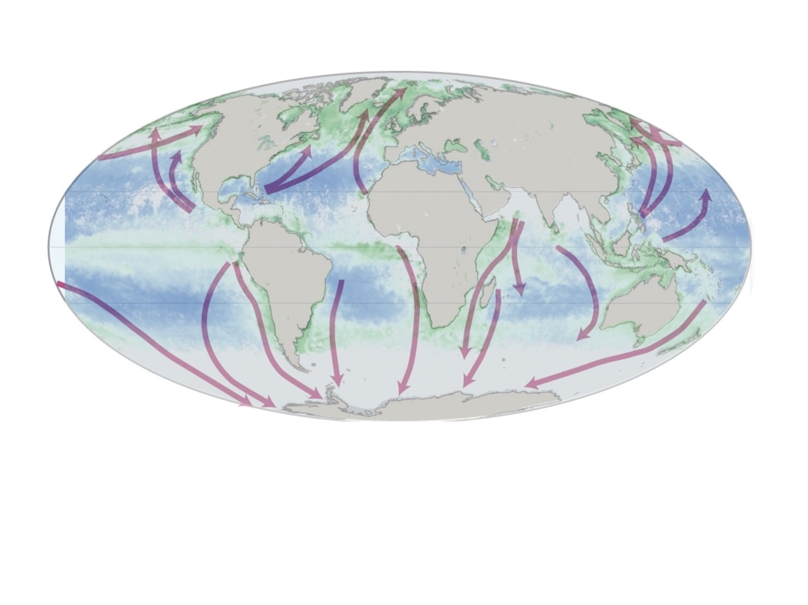

Exploring Sea Animals in the Ocean
At the left is the video that introduce the sea animals.
Comparison between the distribution of phytoplankton and the migration of whales.
We put them together to take a look.

, style="position: absolute;left: 10px;top: 600px;">
It seems like they influence each other! But why?
God of Agriculture-Whales
Whales lives in the deep ocean. They returns to
the surface of the ocean to breathe and defecate.
Because its fece is rich in iron minerals,
it creates nice environment for the phytoplankton.